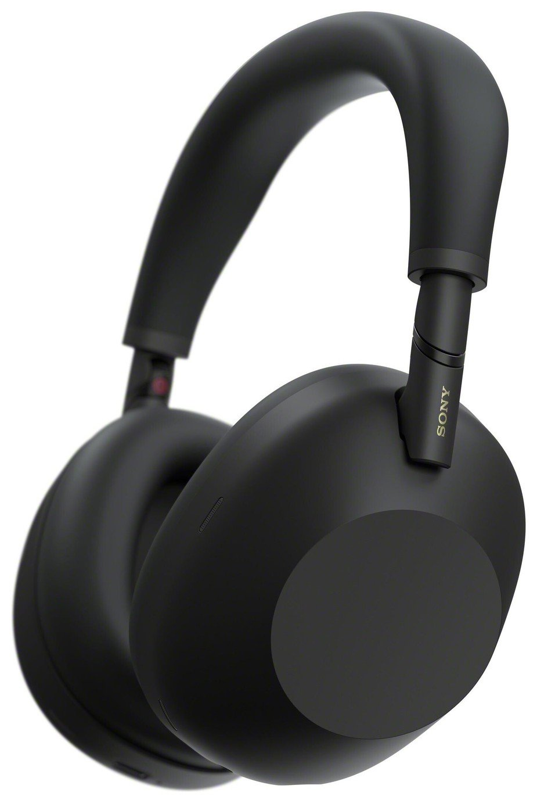
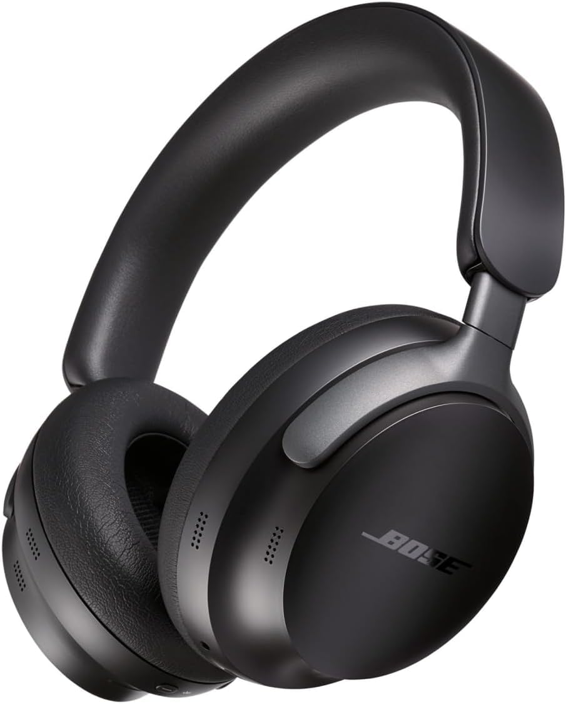
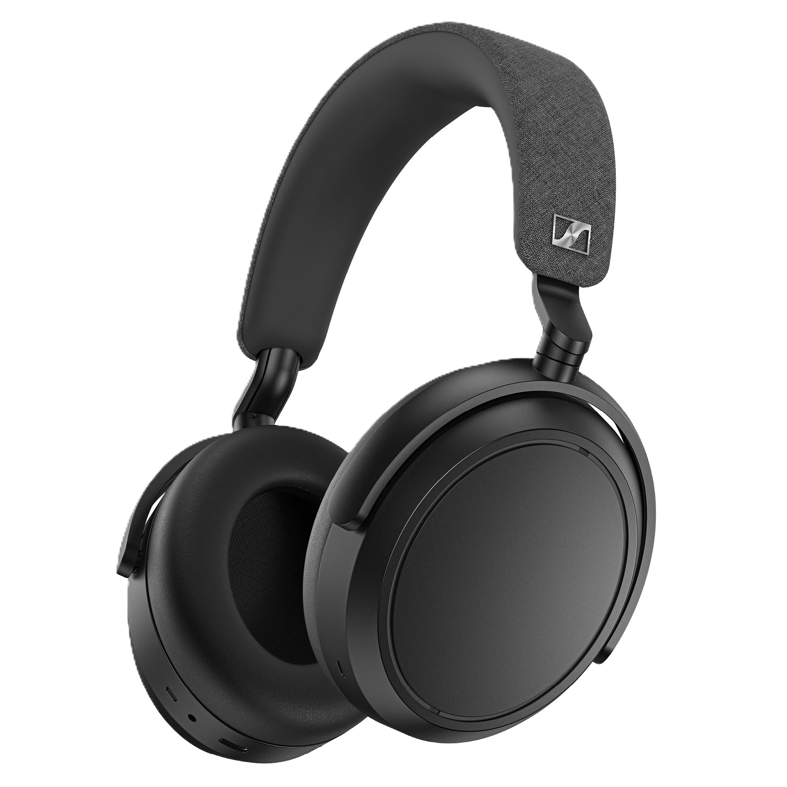
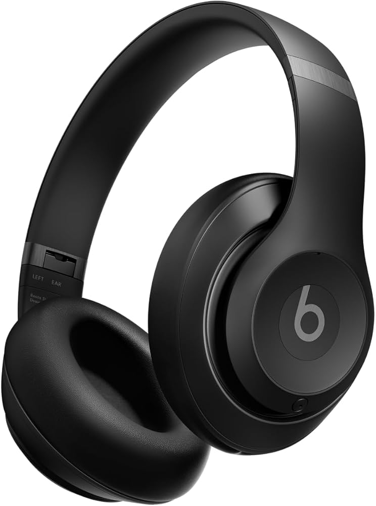
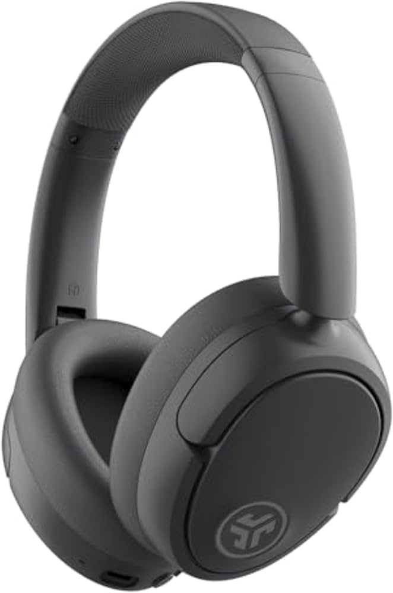

1. Sony WH-1000XM6

Overview: Sony’s flagship noise-canceling headphones set the industry standard.
- Class-leading noise cancellation that adapts to your environment.
- Rich, punchy bass with clear mids and highs.
- Comfortable padding for long listening sessions.
- Up to 30 hours of battery life with ANC enabled.
- Premium price compared to competitors.
- Touch controls can be sensitive for some users.
Buy on Amazon
2. Bose QuietComfort Ultra

Overview: Built for comfort-first users who want powerful noise cancellation.
- Arguably the most comfortable headphones on the market.
- Consistent and effective noise cancellation.
- Balanced sound profile suitable for calls and podcasts.
- Battery life shorter than some rivals.
- Higher price for the feature set.
Buy on Amazon
3. Sennheiser Momentum 4 Wireless

Overview: Excellent sound quality paired with outstanding battery life.
- Massive 60-hour battery life.
- Highly detailed and natural sound tuning.
- Great value for premium-level audio.
- Noise cancellation is good but not class-leading.
- Microphone quality is average.
Buy on Amazon
4. Beats Studio Pro

Overview: Stylish headphones with deep bass and Apple ecosystem features.
- Punchy bass great for modern music.
- Seamless Apple device integration.
- Up to 40 hours of battery life.
- Sound is not as balanced as competitors.
- ANC performance trails Sony and Bose.
Buy on Amazon
5. JLab JBuds Lux ANC

Overview: A budget-friendly option with impressive battery life.
- Up to 70 hours of total battery life.
- Very affordable price point.
- Hybrid ANC at a budget level.
- Plastic build feels less premium.
- ANC struggles in very noisy environments.
Buy on Amazon